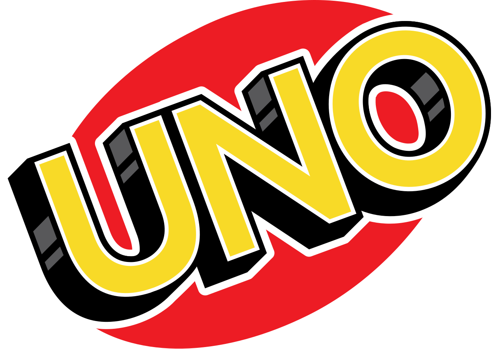

Board

4/5 if you want a perfectly middle of the road baord game with
betrayal, fun, and bonding this is a good one to choose.
5/5 One of my favorite indie games in table top form, with even a
single player way to play it.

4/5 a true classic that works your brain while also having fun.
Card

4/5 Love cats, humor, and explosions? This game is 3 things I love in
one, and it's easy.

5/5 Another true classic that has stood the test of time compared to
other card games. With multiple version and even people making house
rules for it, you can have tons of fun.

3/5 A card game I am familiar with and play at least once a year when
I'm with family, middle of the road card game.
Puzzle

3/5 Once again another classic, which while fun, you have to either be
naturally good at it, or learn an algorithm to solve. Which I forget
if I'm not constantly doing it.
4/5 Perplexus is an interesting little platformer puzzle. using a
small metal ball to move around a long twisting track, or you can
strategically flip the whole thing on it's head to get to the end.
4/5 Jenga is a classic. Differeing from other puzzles by being a
multiplayer game, where you have to make it so your opponents are at
fault for making the towers fall.